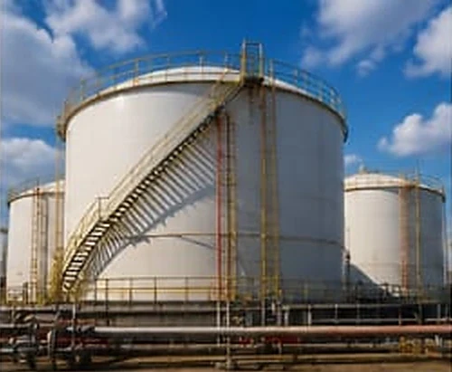
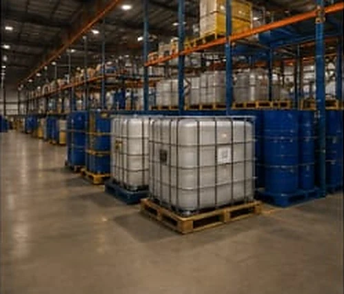
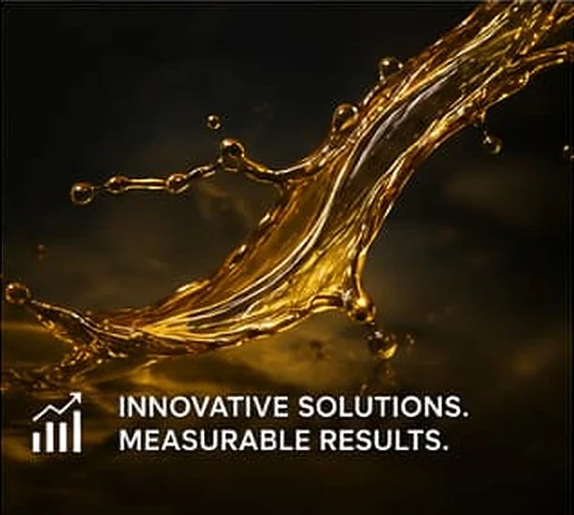

01
We draw the sample ourselves
Our technician takes it on site, seals it and logs it. A treatment designed on somebody else’s sample is a guess, and a guess is what you are already paying for.
Nigeria · Oil & gas services
Nexora Oil & Gas Services Limited supplies oilfield and industrial chemicals, laboratory and analytical services, procurement, marine support, field services and technical expertise to the oil & gas and wider industrial sectors.
0
Integrated service lines, one point of contact
0
Production chemical families supplied
0h
Standard laboratory turnaround target
0%
Batches released against a certificate
Most suppliers sell a product and leave the outcome to you. We take the sample, run the screen, support the injection and evaluate the result — so what you buy is a measured change in your operation, not a pallet in your yard. We are not just a supplier. We aim to be your technical partner.
Plate 01 The screen that comes before the recommendation
“Successful partnerships are built on technical competence, quality, integrity, responsiveness and measurable results.”
Operating principle · Nexora Oil & Gas Services Limited
Eight service lines that combine technical expertise, quality products, laboratory capability and field support — so a problem does not have to be handed between vendors to get solved.
The order matters: each stage produces the evidence the next one is judged against. Our field work exists to close the gap between what the laboratory predicted and what the system actually did.
01
Our technician takes it on site, seals it and logs it. A treatment designed on somebody else’s sample is a guess, and a guess is what you are already paying for.
02
Candidate chemistries run side by side against your fluid at your temperature. The one that performs at the lowest effective dose gets recommended — whether or not it is the one we would rather sell.
03
We support the injection, watch the system and collect the data. Laboratory performance and field performance are not the same thing, and the difference is where money is lost.
04
You receive the result, the method and the interpretation — including the runs that underperformed. Then we adjust the dose, the chemistry or the injection point and measure again.
We do not recommend from a datasheet. Every family below is matched to your fluid by the laboratory test named in the final column, and re‑checked once it is in the system.
| Family | Primary application | Qualified by |
|---|---|---|
| Demulsifier | Crude and water separation at the separator train | Bottle test |
| Corrosion inhibitor | Wet gas lines and carbon steel pipework | Coupon study |
| Scale inhibitor | Downhole squeeze and continuous injection | Inhibition efficiency |
| Wax & paraffin inhibitor | Flowlines, risers and export systems | Cold finger |
| Pour point depressant | Waxy crude transport and cold restart | Pour point, D97 |
| Biocide | Water injection and produced water systems | Bacterial count |
| Defoamer | Separators, amine units and glycol circuits | Foam knockdown |
| H₂S scavenger | Sour crude and vapour space control | H₂S in vapour |
| Surfactant | Wetting, cleaning and interfacial control | Interfacial tension |
| Other production chemicals | Specified against the operating condition | Programme dependent |

Plate 02 Bulk storage and transfer, where the specification has to hold

Plate 03 Segregated storage and controlled stock handling
Next step
Tell us what the system is doing and what it needs to do. We will tell you which test answers the question, what it will take, and what we would recommend once we have the result.
